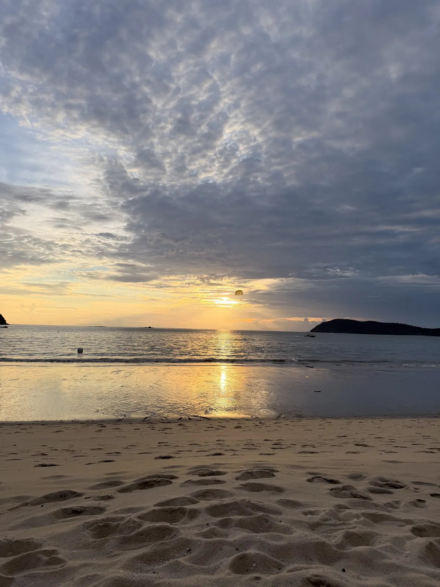
Malaysia
Von Langkawi bis Borneo: Regionen, Routen für 2 bis 5 Wochen, Reisezeit, Einreise und Kosten in Franken.
WeiterlesenMalaysia auf einen Blick.
Der grössere Teil der Menschen lebt auf der Malaiischen Halbinsel, zwischen Thailand und Singapur. Hier liegen Kuala Lumpur, Penang und Langkawi. Der andere Teil, Sabah und Sarawak, liegt auf Borneo, mit Regenwald, Orang-Utans und dem höchsten Berg des Landes.
Was Malaysia ausmacht, merkst du schon am ersten Tag: Neben der Moschee steht ein chinesischer Tempel, ein paar Strassen weiter riecht es nach indischem Curry. Englisch verstehen fast alle, und mit Bus und Bahn kommst du einfacher herum als in den meisten Nachbarländern.
Wir waren vom 11. August bis 17. September 2026 hier, angefangen in Kuala Lumpur, zum Schluss fast zwei Wochen auf Langkawi. Borneo, die Ostküste und Malakka haben wir für unsere nächste Reise recherchiert. Bei jeder Region steht, ob wir dort waren.
Kurz vorweg
Alle Preise sind Richtwerte in Franken pro Person, Stand Oktober 2026, mit der Faustregel 1 CHF rund 5 Ringgit. Regeln und Preise ändern sich, prüf sie vor der Reise nach. Bei jeder Region steht, ob wir dort selbst waren.
Die wichtigsten Antworten
Für alle, die nur zwei Minuten haben. Die Details stehen weiter unten.
Visum
Nein, mit Schweizer Pass bis 90 Tage. Pflicht ist die Einreisekarte MDAC, gratis, in den drei Tagen vor der Ankunft.
Budget
Zwei Wochen Westküste kosten rund 1’150 bis 2’500 CHF pro Person, inklusive Flug.
Beste Reisezeit
Westküste mit Penang und Langkawi etwa Dezember bis März. Ostküste etwa Februar bis Juli.
Start
Kuala Lumpur. Hier landen fast alle Flüge, und von hier fährst du ohne Umweg nach Norden.
Wie lange
Zwei Wochen für die Westküste kompakt, drei Wochen bis Langkawi, plus eine Woche für Borneo.
Vor dem Abflug
MDAC ausfüllen, Adapter Typ G einpacken, Auslandskrankenversicherung mit Rücktransport.
Land und Leute: der Steckbrief
Zuerst die Zahlen, dann ein kurzer Blick zurück. Ohne die Geschichte versteht man nicht, warum in George Town Clanhäuser neben Moscheen stehen.
| Thema | Angabe |
|---|---|
| Hauptstadt | Kuala Lumpur. Regierung und Ministerien sitzen im neuen Verwaltungszentrum Putrajaya. |
| Einwohner | Rund 34 Millionen. |
| Fläche | Rund 330’000 Quadratkilometer, etwa 8-mal die Schweiz. |
| Landesteile | Westmalaysia auf der Malaiischen Halbinsel und Ostmalaysia mit Sabah und Sarawak auf Borneo. |
| Staatsform | Konstitutionelle Monarchie. Die neun Sultane wählen alle fünf Jahre einen von ihnen zum König. |
| Bevölkerung | Rund 70 Prozent Malaien und andere indigene Gruppen, rund 23 Prozent mit chinesischen und rund 7 Prozent mit indischen Wurzeln. |
| Religion | Der Islam ist Staatsreligion, gut 60 Prozent sind Musliminnen und Muslime. Dazu kommen Buddhisten, Christen und Hindus. |
| Sprache | Bahasa Malaysia. Englisch ist weit verbreitet, dazu Kantonesisch, Hokkien, Mandarin und Tamil. |
| Währung | Malaysischer Ringgit (RM oder MYR). 1 CHF ≈ 5 RM. |
| Zeitzone | Eine für das ganze Land. Im Schweizer Sommer 6 Stunden voraus, im Winter 7. |
| Vorwahl | +60 |
| Strom | 240 Volt, Steckdosen Typ G mit drei eckigen Stiften wie in Grossbritannien. |
| Verkehr | Linksverkehr. |
| Notruf | 999 für Polizei, Ambulanz und Feuerwehr. Vom Handy geht auch 112. |


Eine Hafenstadt macht Geschichte
Um 1400 entstand an der Westküste das Sultanat Malakka. Die Stadt lag an der Meerenge zwischen Indien und China und wurde zu einem der wichtigsten Häfen Asiens. Mit den Händlern kam der Islam. 1511 eroberten die Portugiesen Malakka, 1641 die Niederländer.
Ab 1786 setzten sich die Briten fest, zuerst auf Penang. Für die Zinnminen, etwa rund um Ipoh, und die Kautschukplantagen holten sie Arbeiter aus China und Indien. Daher kommt die Mischung, die du heute überall siehst.
Merdeka
Am 31. August 1957 wurde Malaya unabhängig, auf dem Merdeka Square in Kuala Lumpur. Merdeka heisst Freiheit, und der 31. August ist bis heute der Nationalfeiertag. 1963 kamen Sabah, Sarawak und Singapur dazu, das Land hiess fortan Malaysia. Singapur trat zwei Jahre später wieder aus.


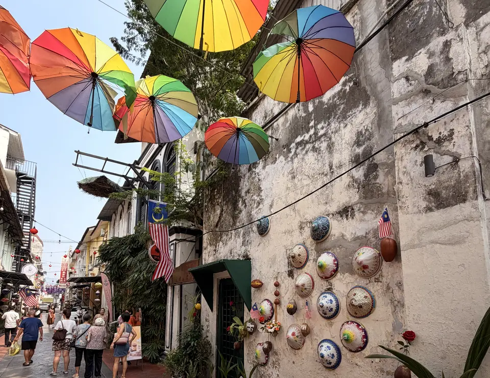

Anreise nach Malaysia: Flug ab Zürich
Einen Direktflug gibt es nicht. Plan 15 bis 18 Stunden mit einem Umstieg ein.
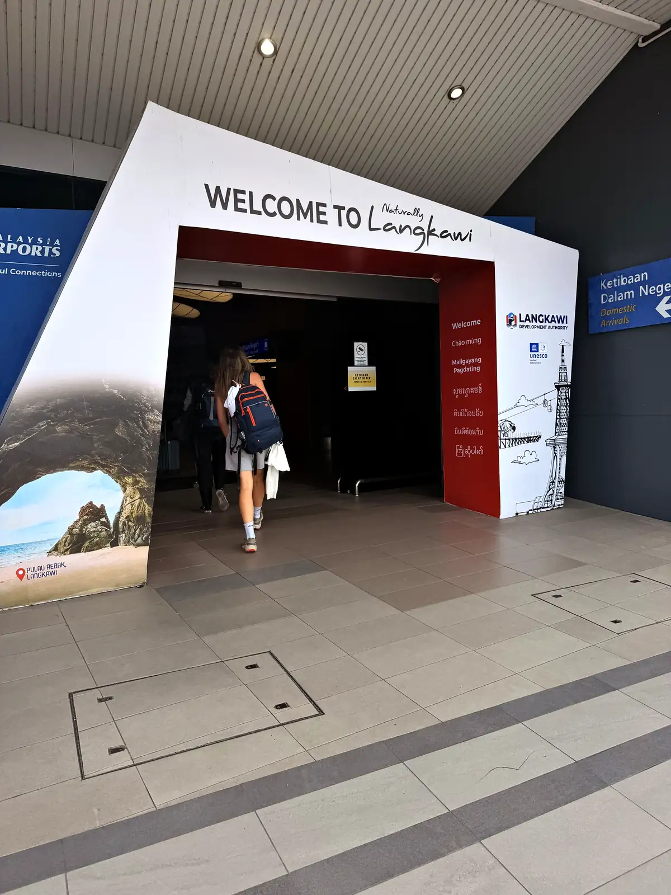


Flug
Mit einem Umstieg in Doha, Dubai, Istanbul oder Singapur bist du rund 15 bis 18 Stunden unterwegs. Ein Flug Zürich–Kuala Lumpur retour kostet in der Economy ausserhalb der Hochsaison meist rund CHF 500 bis 900. Wir rechnen in unseren Routen mit diesen Werten. Buch drei bis sechs Monate vorher.
Vom Flughafen in die Stadt
Fast alle Flüge landen am Flughafen KLIA bei Kuala Lumpur. Der KLIA Ekspres fährt in rund 30 Minuten bis KL Sentral und kostet RM 55, rund CHF 11. Ab 1. Januar 2027 steigt der Preis auf RM 65. Grab und Taxi sind teurer, der Bus günstiger, aber langsamer.
Zeitverschiebung
Malaysia liegt im Schweizer Sommer 6 Stunden voraus, im Winter 7. Die erste Nacht ist kurz. Wer den ersten Tag in Kuala Lumpur ruhig angehen lässt, kommt schneller an.
Aus dem Nachbarland kommst du einfach: Nach Singapur fährst du ab Kuala Lumpur mit Bus oder Flugzeug. Nach Thailand fliegst du ab Penang oder Langkawi, oder du nimmst die Fähre ab Langkawi. Über Land durch die Grenzregion zum Süden Thailands rät das EDA ab. Mehr dazu im Thailand-Guide.
Einreise und Visum für Malaysia
Mit Schweizer Pass darfst du bis zu 90 Tage ohne Visum in Malaysia bleiben. Ein paar Dinge musst du trotzdem vor dem Abflug erledigen.


Die digitale Einreisekarte MDAC
Die Malaysia Digital Arrival Card füllst du in den drei Tagen vor der Ankunft online aus, auf der offiziellen Seite MDAC. Sie ist gratis und dauert fünf Minuten. Pass auf: Bei der Suche stehen oft Kopien mit Gebühr weiter oben.
Pass und Weiterreise
Der Pass muss bei der Einreise noch mindestens sechs Monate gültig sein. Bei der Einreise kann man dich nach einem Rück- oder Weiterreiseticket fragen. Wenn du ohne festen Rückflug reist, hilft dir unser Beitrag zum Weiterreiseticket.
Borneo hat eine eigene Kontrolle
Sabah und Sarawak kontrollieren die Einreise selbst. Auch wenn du aus Kuala Lumpur kommst, zeigst du bei der Ankunft auf Borneo nochmals den Pass und bekommst einen eigenen Stempel. Für Schweizer gelten dort bis zu 90 Tage. Schau auf den Stempel, wie viele Tage dort stehen, und plane nicht mit mehr.
Zoll
Für Erwachsene ist 1 Liter Alkohol zollfrei, bei Tabak und Geschenken gelten tiefe Grenzen. Bargeld ab einem Wert von 10’000 US-Dollar musst du deklarieren. Die offiziellen Regeln stehen bei der malaysischen Zollbehörde.
Langkawi ist eine zollfreie Insel. Was du dort günstig kaufst, darfst du beim Weiterreisen aufs Festland nur in begrenzter Menge mitnehmen.
Touristensteuer
In Hotels zahlen ausländische Gäste pro Zimmer und Nacht RM 10, rund 2 CHF. Sie steht oft nicht im Buchungspreis und wird an der Rezeption fällig.
Länger als 90 Tage?
Wer länger bleiben will, muss vor Ablauf ausreisen oder sich beim Immigration Department um eine Verlängerung kümmern. Aktuelle Hinweise gibt es bei der Botschaft von Malaysia in Bern.
Deine Checkliste bis zur Ankunft
Alles, was du vor der Reise erledigen musst, in der richtigen Reihenfolge. Dazu, was dich am Flughafen erwartet.
| Wann | Was |
|---|---|
| 3 bis 6 Monate vorher | Flug buchen. Pass prüfen: mindestens sechs Monate gültig ab Einreise. Reisezeit mit Monsun, Chinesischem Neujahr und Hari Raya abgleichen. |
| 6 bis 8 Wochen vorher | Reisemedizinische Beratung, besonders wenn du nach Borneo willst. Infos auf healthytravel.ch. Auslandskrankenversicherung abschliessen. Für einen Mietwagen den internationalen Führerausweis beim Strassenverkehrsamt bestellen. |
| 2 bis 4 Wochen vorher | Für den Kinabalu die Bewilligung buchen, die Plätze sind schnell weg. Medikamente besorgen, mit Arztzeugnis auf Englisch. Reise in der App Travel Admin des EDA erfassen. eSIM kaufen. |
| 1 bis 3 Tage vorher | Einreisekarte MDAC ausfüllen. Pass, Versicherungsnachweis und Buchungen als PDF aufs Handy und in die Cloud. |
| Bei der Ankunft | Am Flughafen KLIA zeigst du an der Passkontrolle den Pass, halte die Bestätigung der MDAC bereit. Geld hebst du am Automaten im Terminal ab, SIM-Karten gibt es gleich daneben. In die Stadt fährst du mit dem KLIA Ekspres oder mit Grab ab dem ausgeschilderten Abholpunkt. |
| Ins Gepäck | Reiseadapter Typ G, ohne geht es nicht. Mückenschutz, Sonnenschutz, ein Pulli für die Cameron Highlands und für die eiskalten Busse. Mehr in unserer Packliste. |
Malaysia Regionen: zehn Orte zwischen Langkawi und Borneo
Die ersten fünf kennen wir selbst, wir sind sie von Kuala Lumpur aus in umgekehrter Reihenfolge gereist. Die anderen fünf haben wir für unsere nächste Reise recherchiert, die Fotos dort sind nicht von uns.


Welche Region passt zu dir?
| Region | Für wen | Anreise ab KL | Budget | Erfahrung | Mindestens | Wir |
|---|---|---|---|---|---|---|
| Langkawi | Strand, Erholung, zollfreies Bier | Flug ab Penang rund 40 Minuten oder ab KL gut 1 Stunde | mittel | wenig | 4 bis 7 Tage | selbst bereist |
| George Town & Penang | Streetfood, Streetart, Altstadt | Zug und Fähre ab KL, rund 4,5 Stunden | mittel | wenig | 3 bis 4 Tage | selbst bereist |
| Ipoh | Altstadt, Kaffee, Wandbilder | Zug ab KL, rund 2,5 Stunden | tief | wenig | 2 bis 3 Tage | selbst bereist |
| Cameron Highlands | Wandern, Teeplantagen, Kühle | Bus ab KL, rund 4,5 Stunden | tief | wenig | 3 bis 4 Tage | selbst bereist |
| Kuala Lumpur | Grossstadt, Essen, Shopping | Hier landest du | mittel | wenig | 3 bis 4 Tage | selbst bereist |
| Malakka | Geschichte, Nachtmarkt | Bus ab KL, rund 2 Stunden | tief | wenig | 1 bis 2 Tage | recherchiert |
| Taman Negara | Regenwald, Wandern | Bus und Boot ab KL, ein halber bis ganzer Tag | mittel | mittel | 3 bis 4 Tage | recherchiert |
| Perhentian-Inseln | Schnorcheln, Tauchen | Flug nach Kota Bharu, dann Auto und Boot | mittel | mittel | 4 bis 6 Tage | recherchiert |
| Sarawak | Nationalparks, Höhlen, Orang-Utans | Flug nach Kuching, knapp 2 Stunden | mittel | mittel | 5 bis 7 Tage | recherchiert |
| Sabah, Westen | Kinabalu, Berge | Flug nach Kota Kinabalu, gut 2,5 Stunden | hoch | mittel | 4 bis 6 Tage | recherchiert |
Budget im Vergleich der Regionen: tief heisst Gästehaus und Garküche reichen, hoch heisst Bewilligungen, Touren oder Flüge treiben die Kosten. Erfahrung meint, wie viel du selbst organisieren musst. Die Fahrzeiten sind Richtwerte, Stand Oktober 2026. Den Norden und Osten von Sabah haben wir bewusst nicht aufgenommen, dazu mehr bei Sabah.


Langkawi
Zum Schluss wieder Strand, und was für einer.
Langkawi besteht aus rund 99 Inseln ganz im Nordwesten, kurz vor der Grenze zu Thailand. Die Strände an der Westküste schauen direkt in den Sonnenuntergang, im Landesinneren gibt es Regenwald, Wasserfälle und eine Seilbahn mit Hängebrücke über dem Dschungel. Und weil Langkawi zollfrei ist, kosten Bier und Schokolade deutlich weniger als auf dem Festland.
Unsere Erfahrung: Wir sind fast zwei Wochen geblieben. Die Affen wissen sehr genau, wo das Essen ist.


George Town & Penang
Streetart an jeder Ecke und ein Hügel über den Wolken.
Die Altstadt von George Town ist seit 2008 UNESCO-Welterbe, zusammen mit Malakka. Chinesische Clanhäuser, Tempel, Moscheen und Kolonialbauten liegen hier wenige Schritte auseinander, dazwischen Streetart an fast jeder Ecke. Penang gilt in ganz Asien als Ziel für Streetfood. Mit der Standseilbahn fährst du auf den Penang Hill, wo es kühler ist.
Für wen? Für alle, die gern ziellos durch Gassen laufen und hungrig sind.


Ipoh
Eine Altstadt voller Wandbilder und eine Gasse voller Regenschirme.
Ipoh wurde mit Zinn reich, und die Altstadt mit ihren Kolonialbauten und alten Ladenhäusern erzählt noch davon. Heute kommen die meisten wegen der Wandbilder, der Concubine Lane mit ihren aufgespannten Regenschirmen und des Essens. Ipoh gilt als Heimat des White Coffee.
Für wen? Für alle, die eine Stadt ohne Hochhaus-Skyline erleben wollen. Ruhiger als Kuala Lumpur und günstiger als Penang.


Cameron Highlands
Teeplantagen im Nebel und endlich wieder ein Pulli.
Das Hochland liegt rund 1’500 Meter über dem Meer, und das spürst du sofort: Tagsüber ist es angenehm, abends kühl. Die Hügel sind mit Teeplantagen bedeckt, dazwischen liegen Erdbeerfarmen, Märkte und ein Netz aus nummerierten Dschungelpfaden. Die rote Telefonkabine erinnert daran, dass die Briten hier früher in die Sommerfrische gingen.
Für wen? Für alle, denen die Hitze im Flachland zu viel wird.


Kuala Lumpur
Hier landen fast alle Flüge. Und hier haben wir angefangen.
Die Hauptstadt ist laut und heiss, und gleich neben den Petronas Towers dampfen die Garküchen. In Chinatown hängen rote Laternen über den Gassen. Abends wird es erst richtig lebendig, in der Food-Street Jalan Alor genauso wie rund um die beleuchtete Masjid Jamek.
Unsere Erfahrung: Neun Nächte, erst in Chinatown, dann in einem Apartment mit Pool auf dem Dach. Unser grösstes Ärgernis war Google Maps, das zwischen Hochhäusern und Fussgängerbrücken regelmässig aufgegeben hat.


Malakka
Die Stadt, in der Malaysias Geschichte anfängt.
Rund 150 Kilometer südlich von Kuala Lumpur liegt die alte Hafenstadt, seit 2008 UNESCO-Welterbe. Am Niederländischen Platz stehen rote Kolonialbauten wie das Stadthuys und die Christ Church. In der Jonker Street findet am Wochenende abends ein Nachtmarkt statt, am Fluss entlang führt ein Uferweg mit Wandbildern.
Für wen? Für alle, die Geschichte mögen. Mit dem Bus ab Kuala Lumpur bist du in rund zwei Stunden da, darum machen es viele als Ausflug. Wer über Nacht bleibt, erlebt den Nachtmarkt und den beleuchteten Fluss.


Taman Negara
Regenwald, wie er seit Millionen Jahren wächst.
Der Nationalpark in der Mitte der Halbinsel gilt als einer der ältesten Regenwälder der Erde. Ausgangspunkt ist das Dorf Kuala Tahan am Fluss. Von dort führen Wanderwege in den Wald und eine Hängebrücke durch die Baumkronen. Abends gibt es Nachtwanderungen mit Guide.
Für wen? Für alle, die Dschungel wollen und auch mit Blutegeln klarkommen. Von November bis Januar steigen die Flüsse, dann ist vieles nur eingeschränkt möglich.


Perhentian-Inseln
Türkises Wasser an der Ostküste, aber nur von etwa März bis September.
Vor der Küste von Terengganu liegen Perhentian Besar, die grosse, und Perhentian Kecil, die kleine Insel. Strassen gibt es keine, zwischen den Stränden fahren Wassertaxis. Zum Schnorcheln und Tauchen gehören sie zu den besten Orten des Landes. Die Boote fahren ab Kuala Besut.
Wichtig: Von etwa November bis Februar ist an der Ostküste Monsun, viele Unterkünfte und Boote machen dann Pause. Die Region ist konservativer als die Westküste, Alkohol gibt es nur in wenigen Lokalen.


Sarawak auf Borneo
Kalksteinnadeln im Regenwald und Nasenaffen am Strand.
Die Hauptstadt Kuching liegt gemütlich am Fluss Sarawak. Rund 20 Kilometer ausserhalb leben im Semenggoh-Zentrum Orang-Utans halb wild im Wald. Eine kurze Bootsfahrt entfernt liegt der Nationalpark Bako, bekannt für Nasenaffen und Bartschweine am Strand. Weiter im Norden liegt Gunung Mulu, UNESCO-Welterbe, mit riesigen Höhlen und den Pinnacles, scharfen Kalksteinnadeln mitten im Wald.
Für wen? Für alle, die Natur wollen und die Hauptstadt hinter sich lassen. Du fliegst ab Kuala Lumpur, nach Mulu geht es nur mit dem Flugzeug weiter. Sarawak hat eine eigene Einreisekontrolle, dazu mehr bei der Einreise.


Sabah auf Borneo
Der höchste Berg des Landes. Die Nord- und Ostküste meidest du laut EDA.
Der Kinabalu ist mit 4’095 Metern der höchste Berg des Landes, der Kinabalu Park ist UNESCO-Welterbe. Für den Aufstieg brauchst du eine Bewilligung und einen Guide, die Plätze sind begrenzt. An der Ostküste liegen das Orang-Utan-Zentrum Sepilok bei Sandakan, der Fluss Kinabatangan und vor der Küste Sipadan, eines der bekanntesten Tauchgebiete der Welt.
Wichtig: Das EDA rät von touristischen Reisen an die Nord- und Ostküste von Sabah ab, von Kudat bis Tawau, und auf die vorgelagerten Inseln. Grund ist das Risiko von Entführungen. Das betrifft auch Sandakan mit Sepilok, den Kinabatangan, Semporna und Sipadan. Für den Rest von Sabah, also auch Kota Kinabalu und den Kinabalu Park, empfiehlt das EDA grosse Vorsicht. Lies die aktuellen Reisehinweisen des EDA und frag deine Versicherung, ob sie die Gegend abdeckt. Orang-Utans siehst du auch in Sarawak, im Semenggoh-Zentrum bei Kuching.
Malaysia Reiseroute: 2, 3, 4 oder 5 Wochen
Drei Routen mit Nächten pro Ort, realistischen Fahrzeiten und einem Puffer vor dem Heimflug. Dazu das Budget pro Person in Franken.
2 Wochen: die Westküste kompakt

14 Nächte. Grossstadt, Berge und Streetfood, mit kurzen Fahrten.
Die Stationen
- Kuala Lumpur, 3 Nächte. Ab Flughafen mit dem KLIA Ekspres in 30 Minuten bis KL Sentral.
- Cameron Highlands, 3 Nächte. Bus ab dem Terminal TBS, rund 4,5 Stunden.
- Ipoh, 2 Nächte. Bus ab Tanah Rata, rund 2,5 Stunden.
- George Town, 4 Nächte. Zug nach Butterworth und Fähre, zusammen rund 2 Stunden.
- Kuala Lumpur, 2 Nächte. Zug zurück in rund 4,5 Stunden oder Flug in 1 Stunde.
Puffer
Die zwei Nächte am Schluss in Kuala Lumpur, nahe beim Flughafen oder bei KL Sentral.
Nicht geeignet für
Alle, die vor allem Strand wollen. Auf dieser Route gibt es keinen.
Hier geht Zeit drauf
Die Busfahrt in die Cameron Highlands, die letzte Stunde geht in Kurven den Berg hoch.
Budget pro Person
| Posten | Einfach (CHF) | Mit mehr Komfort (CHF) |
|---|---|---|
| Flug Zürich–Kuala Lumpur retour | 500 | 900 |
| Unterkunft, 14 Nächte | 280 | 840 |
| Essen | 210 | 420 |
| Transport vor Ort | 80 | 160 |
| Aktivitäten | 50 | 150 |
| Touristensteuer | 14 | 14 |
| Total pro Person | rund 1’150 CHF | rund 2’500 CHF |
3 Wochen: von Kuala Lumpur bis Langkawi


21 Nächte. Genau unsere Strecke, nur kürzer.
Die Stationen
- Kuala Lumpur, 4 Nächte. Ankommen.
- Cameron Highlands, 4 Nächte. Bus ab TBS, rund 4,5 Stunden.
- Ipoh, 3 Nächte. Bus, rund 2,5 Stunden.
- George Town, 4 Nächte. Zug nach Butterworth und Fähre, rund 2 Stunden.
- Langkawi, 5 Nächte. Flug ab Penang in rund 40 Minuten. Die Direktfähre fährt nicht mehr.
- Kuala Lumpur, 1 Nacht. Flug ab Langkawi in rund 1 Stunde.
Puffer
Die letzte Nacht in Kuala Lumpur. Flieg am Vortag von Langkawi zurück, nicht am Tag des Heimflugs.
Nicht geeignet für
Alle, die nicht gern packen. Fünf Ortswechsel in drei Wochen sind sportlich, wer langsamer reisen will, lässt Ipoh weg.
Hier geht Zeit drauf
Der Weg nach Langkawi und die Bergstrecke in die Cameron Highlands.
Budget pro Person
| Posten | Einfach (CHF) | Mit mehr Komfort (CHF) |
|---|---|---|
| Flug Zürich–Kuala Lumpur retour | 500 | 900 |
| Unterkunft, 21 Nächte | 420 | 1’260 |
| Essen | 315 | 630 |
| Transport vor Ort, inkl. Flug Langkawi–KL | 130 | 230 |
| Aktivitäten | 80 | 200 |
| Touristensteuer | 21 | 21 |
| Total pro Person | rund 1’450 CHF | rund 3’250 CHF |
4 Wochen: Westküste und Borneo


27 Nächte. Die Halbinsel wie oben, dazu Sarawak und der Kinabalu. Borneo haben wir recherchiert, nicht selbst bereist.
Die Stationen
- Kuala Lumpur, 4 Nächte. Ankommen.
- Cameron Highlands, 3 Nächte. Bus ab TBS, rund 4,5 Stunden.
- Ipoh, 2 Nächte. Bus, rund 2,5 Stunden.
- George Town, 4 Nächte. Zug und Fähre, rund 2 Stunden.
- Langkawi, 5 Nächte. Flug ab Penang, rund 40 Minuten.
- Kuching, Sarawak, 4 Nächte. Flug über Kuala Lumpur, ein halber Reisetag. Von hier Bako und die Orang-Utans von Semenggoh.
- Kinabalu Park, Sabah, 3 Nächte. Flug von Kuching nach Kota Kinabalu in rund 1,5 Stunden, dann 2 Stunden mit dem Auto.
- Kota Kinabalu, 2 Nächte. Zurück an die Küste, Heimflug über Kuala Lumpur.
Puffer
Die zwei Nächte in Kota Kinabalu. Der Kinabalu kann wegen Wetter gesperrt sein, und Inlandflüge verspäten sich.
Nicht geeignet für
Alle mit wenig Zeit oder kleinem Budget. Die Inlandflüge und der Kinabalu kosten deutlich mehr als die Halbinsel.
Hier geht Zeit drauf
Die zwei Flugtage nach Borneo und innerhalb von Borneo.
Budget pro Person
| Posten | Einfach (CHF) | Mit mehr Komfort (CHF) |
|---|---|---|
| Flug Zürich–Kuala Lumpur retour | 500 | 900 |
| Inlandflüge | 120 | 250 |
| Unterkunft, 27 Nächte | 540 | 1’620 |
| Essen | 420 | 840 |
| Transport vor Ort | 140 | 260 |
| Aktivitäten | 150 | 300 |
| Touristensteuer | 27 | 27 |
| Total pro Person | rund 1’900 CHF | rund 4’200 CHF |
Optional: Die Besteigung des Kinabalu mit Bewilligung, Guide und Hüttennacht kostet zusätzlich rund 310 bis 500 CHF.
5 Wochen: unsere Route
Kuala Lumpur vom 11. bis 20. August, Cameron Highlands bis 27. August, Ipoh bis 1. September, George Town bis 5. September und Langkawi bis 17. September 2026. Mehr im Kuala Lumpur Guide.
So haben wir gerechnet: pro Person im Doppelzimmer, Flug in der Economy ab Zürich ausserhalb der Hochsaison, ohne Versicherung und Ausrüstung. Einfach heisst Gästehaus, Garküche und Bus. Mit mehr Komfort heisst Mittelklassehotel oder Apartment mit Pool, Restaurants und ab und zu Grab statt Bus. Grundlage sind unsere Preise aus fünf Wochen Malaysia und Richtwerte für Borneo. Kurs 1 CHF ≈ 5 RM, Stand Oktober 2026. Eine Schätzung, kein Angebot.
Unterwegs in Malaysia: Bus, Zug, Fähre und Grab
Malaysia ist eines der einfachsten Länder Südostasiens zum Reisen. Busse und Züge sind günstig, klimatisiert und online buchbar.


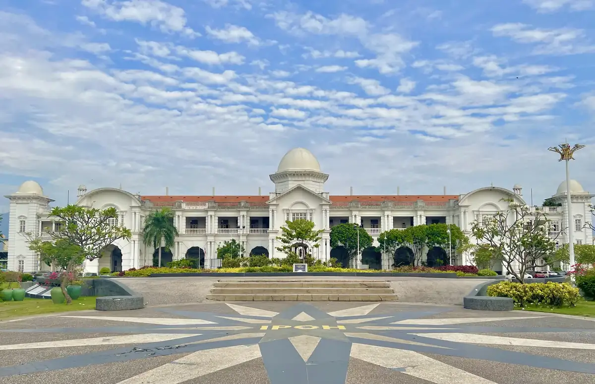


Von KL bis Langkawi
Von Kuala Lumpur fährt der Bus ab dem Terminal TBS in rund 4,5 Stunden bis Tanah Rata in den Cameron Highlands, die letzte Stunde in Kurven den Berg hoch. Von dort nach Ipoh sind es rund 2,5 Stunden. Ab Ipoh bringt dich der Zug nach Butterworth und die Fähre in 20 Minuten nach George Town. Nach Langkawi fliegst du ab Penang in rund 40 Minuten. Die Direktfähre ab Penang fährt seit der Pandemie nicht mehr, über Kuala Perlis oder Kuala Kedah geht es mit Bus und Fähre, dauert aber länger.
Züge und Busse
Die schnellen ETS-Züge der Bahn KTMB verbinden die Westküste von Süden bis zur Grenze zu Thailand. Fernbusse fahren fast überall hin und werden über die gängigen Portale gebucht. Pack einen Pulli ein, die Klimaanlage läuft auf Hochtouren.
Inlandflüge
Nach Borneo, auf die Ostküste oder nach Langkawi fliegst du am schnellsten, zum Beispiel mit AirAsia, Malaysia Airlines oder Batik Air. Bei Billigfliegern ist Gepäck meist extra.
Grab
Die App funktioniert im ganzen Land und ist günstig. Der Preis steht vorher fest, bezahlt wird mit Karte, und Handeln entfällt. In Kuala Lumpur haben wir Grab für alles genommen, was mit der Bahn umständlich war.
Zu Fuss in der Stadt
In Kuala Lumpur ist Laufen anstrengender, als die Karte vermuten lässt. Gehsteige hören plötzlich auf, Wege führen über Brücken und durch Malls, und Google Maps hat uns dort mehr als einmal im Kreis geschickt. Plan für jeden Weg zehn Minuten mehr ein.
Mietwagen
Die Strassen sind gut, es gilt Linksverkehr. Für Langkawi oder Borneo kann ein Auto praktisch sein. Den Schweizer Führerausweis anerkennt Malaysia nur mit beglaubigter Übersetzung auf Englisch oder Malaiisch, einfacher ist der internationale Führerausweis zusammen mit dem Schweizer Ausweis (Quelle: TCS).
Fahrpläne und Preise ändern sich, prüf sie vor der Abreise.
Unterkunft in Malaysia: Gästehaus, Hotel und Apartment
Einfach heisst Gästehaus oder Hostel, mit mehr Komfort Mittelklassehotel oder Apartment mit Pool. Die Werte sind pro Person im Doppelzimmer.
| Art | Pro Person und Nacht | Hinweis |
|---|---|---|
| Gästehaus und Hostel | rund CHF 20 | So haben wir gerechnet: 14 Nächte kosten einfach CHF 280 pro Person. |
| Mittelklassehotel oder Apartment mit Pool | rund CHF 60 | Mit mehr Komfort kosten 14 Nächte CHF 840 pro Person. |
| Touristensteuer | RM 10 pro Zimmer und Nacht | Rund CHF 2 pro Zimmer. Sie steht oft nicht im Buchungspreis und wird an der Rezeption fällig. |


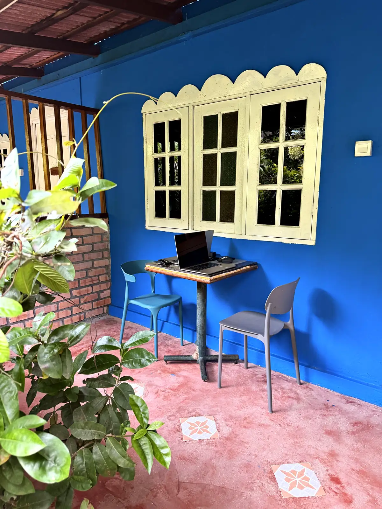
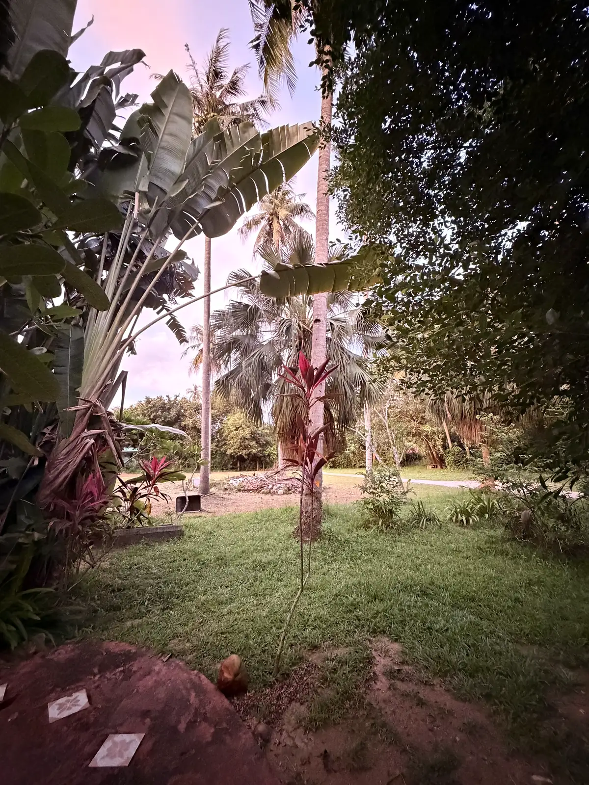
Wo du suchst
Wir suchen Unterkünfte auf mehreren Plattformen und vergleichen den Endpreis. Mehr dazu in unseren Reise-Hacks.
Lage vor Pool
In Kuala Lumpur lohnt sich ein Zimmer nahe an einer Bahnstation. Auf Langkawi und in George Town zählt der Weg zum Strand und zur Altstadt.
Hohe Saison
Über Chinesisches Neujahr, Hari Raya und die Schulferien sind Busse, Züge und Unterkünfte früh ausgebucht. Wer dann reist, bucht vor.
Essen in Malaysia: drei Küchen gleichzeitig
Malaiisch, chinesisch und indisch, oft am selben Foodcourt. Die günstigsten und oft besten Gerichte gibt es an Garküchen und in den Foodcourts der Malls.


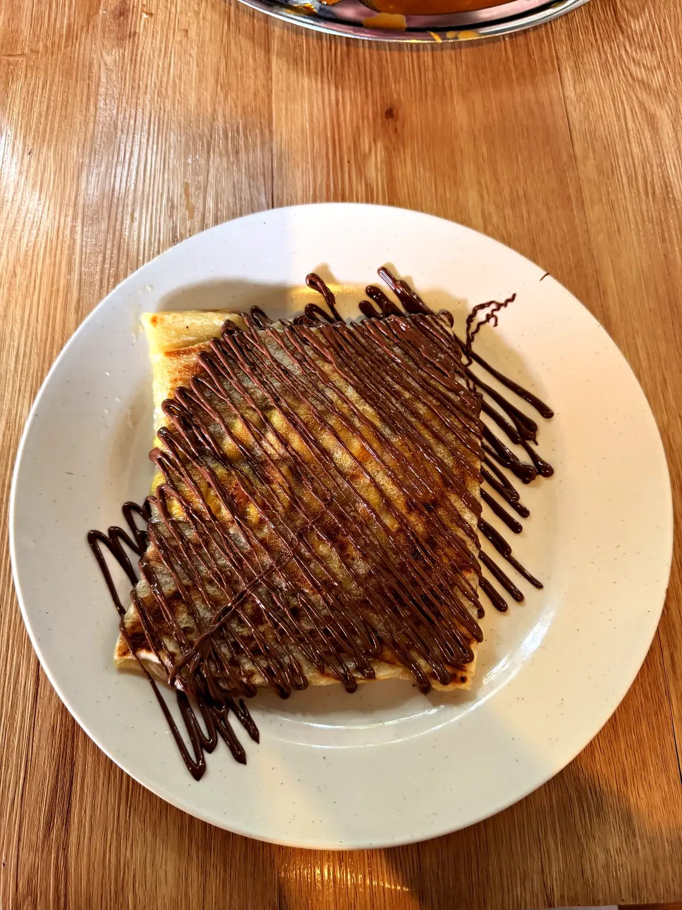


Garküche, Foodcourt und Nachtmarkt
Die günstigsten und oft besten Gerichte gibt es an Garküchen und in den Foodcourts der Malls. Penang gilt als Streetfood-Hauptstadt, Ipoh ist die Heimat des White Coffee, und auf der Jalan Alor in Kuala Lumpur isst man abends zwischen roten Laternen.
Preise
Ein Teller Nudeln an der Garküche kostet oft unter RM 15, also weniger als CHF 3. Alkohol ist hoch besteuert, nur auf Langkawi ist er dank Zollfreiheit günstig.
Typische Gerichte
| Gericht | Was es ist |
|---|---|
| Nasi Lemak | Kokosreis mit scharfem Sambal, gerösteten Erdnüssen, Sardellen und Ei. Das Nationalgericht, oft schon zum Frühstück. |
| Roti Canai | Hauchdünnes, gefaltetes Fladenbrot aus der indischen Küche, dazu Curry zum Tunken. |
| Char Kway Teow | Flache Reisnudeln aus dem heissen Wok, mit Crevetten, Sprossen und Ei. Penang ist berühmt dafür. |
| Asam Laksa | Saure, scharfe Fischsuppe mit dicken Nudeln, eine Spezialität von Penang. |
| Satay | Spiesse vom Grill mit Erdnusssauce. In der Jalan Alor in Kuala Lumpur haben wir sie direkt vom Grill gegessen. |
| Nasi Kandar | Reis mit verschiedenen Currys, die über den Teller gegossen werden. Stammt von indisch-muslimischen Händlern in Penang. |
| Banana Leaf Rice | Reis und Currys auf einem Bananenblatt, in indischen Restaurants. Gegessen wird traditionell mit der rechten Hand. |
| Teh Tarik | Süsser Schwarztee mit Kondensmilch, der beim Eingiessen aus grosser Höhe schaumig gezogen wird. |
| Ipoh White Coffee | Kaffee aus Bohnen, die in Margarine geröstet werden, mit Kondensmilch. Ipoh gilt als seine Heimat. |
| Cendol | Geschabtes Eis mit grünen Reismehlnudeln, Kokosmilch und Palmzucker. Genau richtig bei 33 Grad. |
Die wichtigsten Wörter
Mit Englisch kommst du in Malaysia fast überall durch. Ein paar Wörter Malaiisch freuen die Leute trotzdem. Malaiisch ist eng mit dem Indonesischen verwandt, wer schon in Indonesien war, erkennt vieles wieder.
| Malaiisch | Deutsch |
|---|---|
| Terima kasih | Danke |
| Sama-sama | Bitte, gern geschehen |
| Selamat pagi | Guten Morgen |
| Berapa? | Wie viel kostet das? |
| Boleh? | Geht das? Darf ich? |
| Tak pedas | Nicht scharf |
| Sedap! | Lecker! |
| Air kosong | Wasser, ohne alles |
| Tapau | Zum Mitnehmen |
| Tandas | Toilette |
Was kostet Malaysia?
Etwas mehr als Indonesien, deutlich weniger als die Schweiz. Mit Gästehaus, Streetfood und Bus kommst du mit rund 30 bis 60 CHF pro Person und Tag aus. Teuer sind vor allem Alkohol und Aussichtsplattformen, ein Bier in der Bar kostet fast so viel wie zu Hause.

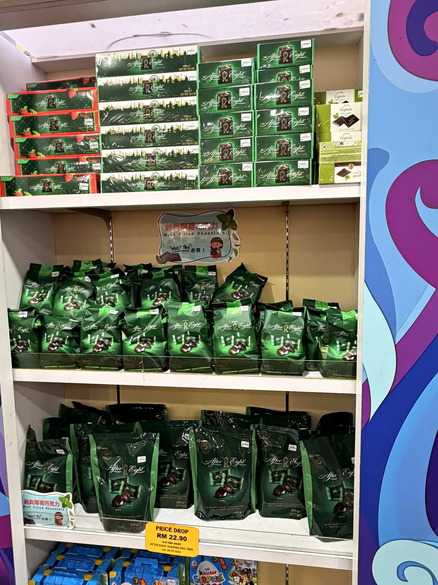


Wo das Geld hingeht
Teuer sind vor allem Alkohol und Aussichtsplattformen. Die Seilbahn auf Langkawi kostet rund CHF 17, die Skybridge an den Petronas Towers rund CHF 20. Dafür sind Bus, Zug und Essen günstig.
Unsere Faustregel
Teil Ringgit durch fünf, dann hast du ungefähr den Preis in Franken.
Preise auf einen Blick
| Ausgabe | Einordnung | Richtwert |
|---|---|---|
| KLIA Ekspres | Flughafen bis KL Sentral | RM 55 (rund 11 CHF), ab 2027 RM 65 |
| Bahnfahrt in Kuala Lumpur | Kurze Strecke | RM 1 bis 2 (20 bis 40 Rappen) |
| Bus KL nach Cameron Highlands | Rund 4,5 Stunden | RM 30 bis 55 (6 bis 11 CHF) |
| Bus Cameron Highlands nach Ipoh | Rund 2,5 Stunden | RM 15 bis 28 (3 bis 6 CHF) |
| Flug Penang nach Langkawi | Rund 40 Minuten | RM 60 bis 225 (12 bis 45 CHF) |
| Petronas Skybridge | Ausländer, Erwachsene | um RM 98 (rund 20 CHF) |
| Seilbahn Langkawi | SkyCab mit Hängebrücke, Ausländer | um RM 85 (rund 17 CHF) |
| Touristensteuer | Pro Zimmer und Nacht im Hotel | RM 10 (rund 2 CHF) |
| Tagesbudget einfach | Pro Person, Gästehaus, Streetfood, Bus | 30 bis 60 CHF |
Preise Stand Oktober 2026. Umgerechnet mit 1 CHF ≈ 5 RM, gerundet. Auf Langkawi sind Bier und Schokolade dank Zollfreiheit deutlich günstiger.
Beste Reisezeit für Malaysia: wann es wo regnet
Malaysia hat zwei Wetterseiten. Die Westküste mit Kuala Lumpur, Penang und Langkawi tickt anders als die Ostküste mit den Perhentian-Inseln. Warm ist es immer, im Flachland tagsüber 30 bis 33 Grad.

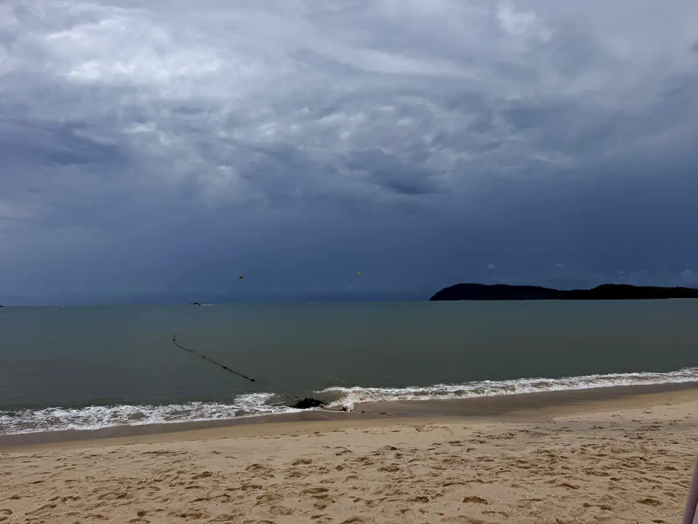

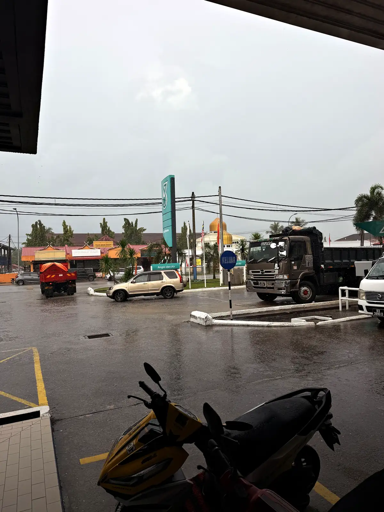
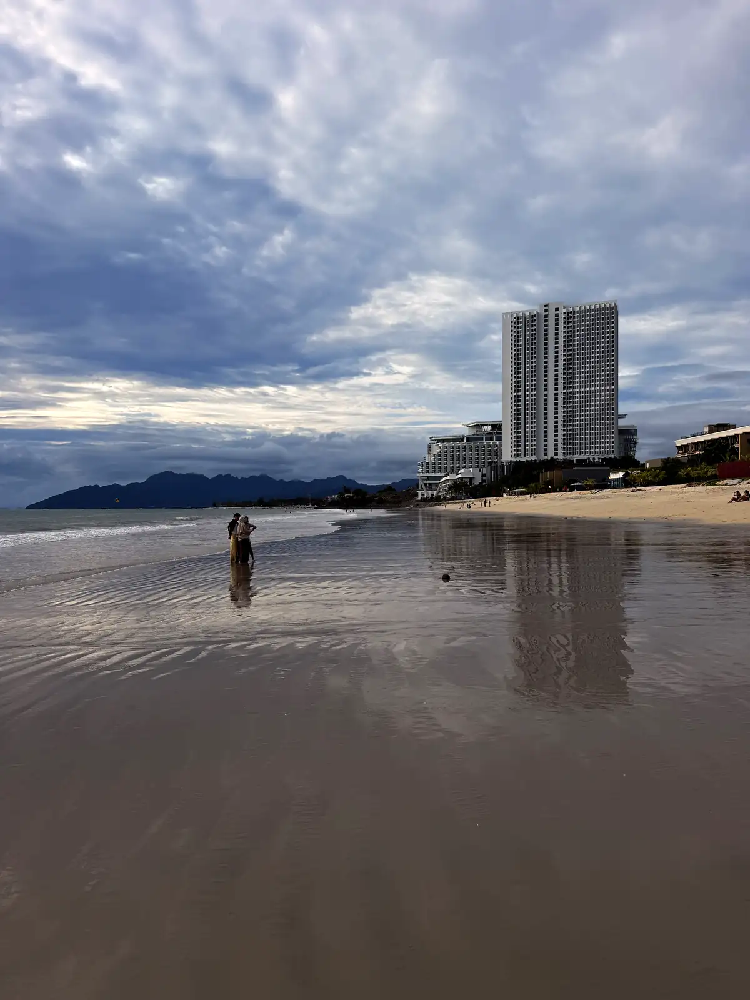
Warm ist es immer
Im Flachland sind es tagsüber 30 bis 33 Grad. Wir waren im August und September da: heiss, nachmittags ab und zu ein Gewitter, gut machbar. Auf Langkawi hat uns ein Sturm und mehrmals Regen erwischt, die Tage danach waren umso schöner.
Wetter im Jahresverlauf
Durchschnittliche Höchsttemperatur und Regentage pro Monat.
| Ort | Jan | Feb | Mär | Apr | Mai | Jun | Jul | Aug | Sep | Okt | Nov | Dez |
|---|---|---|---|---|---|---|---|---|---|---|---|---|
| Westküste | ||||||||||||
| 14 Tage33 °Cwechselhaft, 14 Regentage, 227 mm | 12 Tage33 °Cwechselhaft, 12 Regentage, 193 mm | 15 Tage34 °Cwechselhaft, 15 Regentage, 270 mm | 17 Tage34 °Cnass, 17 Regentage, 302 mm | 13 Tage34 °Cwechselhaft, 13 Regentage, 230 mm | 10 Tage33 °Cmeist trocken, 10 Regentage, 146 mm | 11 Tage33 °Cmeist trocken, 11 Regentage, 165 mm | 11 Tage33 °Cmeist trocken, 11 Regentage, 174 mm | 13 Tage33 °Cwechselhaft, 13 Regentage, 220 mm | 16 Tage33 °Cwechselhaft, 16 Regentage, 284 mm | 20 Tage32 °Cnass, 20 Regentage, 356 mm | 16 Tage32 °Cwechselhaft, 16 Regentage, 281 mm | |
Kuala Lumpur: Regen pro Monat Die Station Subang liegt am Flughafen ca. 20 km westlich des Zentrums. Messwerte der Station Subang (WMO-Nr. 48647), Malaysian Meteorological Department, WMO-Normalwerte 1991–2020 (Archiv NOAA NCEI). Tage mit mindestens 1 mm Niederschlag pro Monat (Januar bis Dezember): 14, 12, 15, 17, 13, 10, 11, 11, 13, 16, 20, 16. | ||||||||||||
| 7 Tage32 °Cmeist trocken, 7 Regentage, 80 mm | 6 Tage32 °Cmeist trocken, 6 Regentage, 86 mm | 10 Tage33 °Cmeist trocken, 10 Regentage, 146 mm | 14 Tage32 °Cwechselhaft, 14 Regentage, 188 mm | 13 Tage32 °Cwechselhaft, 13 Regentage, 229 mm | 10 Tage32 °Cmeist trocken, 10 Regentage, 164 mm | 10 Tage32 °Cmeist trocken, 10 Regentage, 190 mm | 13 Tage31 °Cwechselhaft, 13 Regentage, 246 mm | 16 Tage31 °Cnass, 16 Regentage, 316 mm | 18 Tage31 °Cnass, 18 Regentage, 337 mm | 16 Tage31 °Cwechselhaft, 16 Regentage, 233 mm | 11 Tage31 °Cmeist trocken, 11 Regentage, 116 mm | |
Penang: Regen pro Monat Die Station liegt am Flughafen im Süden der Insel. Messwerte der Station Bayan Lepas (Penang) (WMO-Nr. 48601), Malaysian Meteorological Department, WMO-Normalwerte 1991–2020 (Archiv NOAA NCEI). Tage mit mindestens 1 mm Niederschlag pro Monat (Januar bis Dezember): 7, 6, 10, 14, 13, 10, 10, 13, 16, 18, 16, 11. | ||||||||||||
| 2 Tage33 °Cmeist trocken, 2 Regentage, 19 mm | 3 Tage33 °Cmeist trocken, 3 Regentage, 34 mm | 7 Tage33 °Cmeist trocken, 7 Regentage, 99 mm | 12 Tage32 °Cwechselhaft, 12 Regentage, 191 mm | 15 Tage32 °Cwechselhaft, 15 Regentage, 210 mm | 14 Tage32 °Cwechselhaft, 14 Regentage, 250 mm | 15 Tage31 °Cwechselhaft, 15 Regentage, 267 mm | 17 Tage31 °Cnass, 17 Regentage, 326 mm | 18 Tage31 °Cnass, 18 Regentage, 335 mm | 19 Tage31 °Cnass, 19 Regentage, 363 mm | 13 Tage31 °Cwechselhaft, 13 Regentage, 193 mm | 5 Tage32 °Cmeist trocken, 5 Regentage, 56 mm | |
Langkawi: Regen pro Monat Messwerte der Station Langkawi, Malaysian Meteorological Department, World Weather Information Service der WMO, Bezugszeitraum 1987–2000. Neuere Normalwerte sind nicht veröffentlicht. Regentage pro Monat (Januar bis Dezember): 2, 3, 7, 12, 15, 14, 15, 17, 18, 19, 13, 5. | ||||||||||||
| 8 Tage32 °Cmeist trocken, 8 Regentage, 102 mm | 6 Tage33 °Cmeist trocken, 6 Regentage, 80 mm | 10 Tage33 °Cmeist trocken, 10 Regentage, 129 mm | 12 Tage33 °Cwechselhaft, 12 Regentage, 166 mm | 11 Tage33 °Cmeist trocken, 11 Regentage, 167 mm | 9 Tage32 °Cmeist trocken, 9 Regentage, 173 mm | 12 Tage32 °Cwechselhaft, 12 Regentage, 196 mm | 12 Tage32 °Cwechselhaft, 12 Regentage, 220 mm | 11 Tage32 °Cwechselhaft, 11 Regentage, 162 mm | 12 Tage32 °Cwechselhaft, 12 Regentage, 189 mm | 16 Tage32 °Cwechselhaft, 16 Regentage, 233 mm | 12 Tage31 °Cwechselhaft, 12 Regentage, 177 mm | |
Melaka: Regen pro Monat Messwerte der Station Melaka (WMO-Nr. 48665), Malaysian Meteorological Department, WMO-Normalwerte 1991–2020 (Archiv NOAA NCEI). Tage mit mindestens 1 mm Niederschlag pro Monat (Januar bis Dezember): 8, 6, 10, 12, 11, 9, 12, 12, 11, 12, 16, 12. | ||||||||||||
| Hochland | ||||||||||||
| 11 Tage21 °Cwechselhaft, 11 Regentage, 95 mm | 11 Tage22 °Cwechselhaft, 11 Regentage, 144 mm | 16 Tage23 °Cwechselhaft, 16 Regentage, 221 mm | 17 Tage23 °Cnass, 17 Regentage, 258 mm | 18 Tage23 °Cnass, 18 Regentage, 274 mm | 13 Tage23 °Cwechselhaft, 13 Regentage, 174 mm | 14 Tage22 °Cwechselhaft, 14 Regentage, 173 mm | 16 Tage22 °Cwechselhaft, 16 Regentage, 230 mm | 20 Tage22 °Cnass, 20 Regentage, 278 mm | 23 Tage22 °Cnass, 23 Regentage, 373 mm | 21 Tage22 °Cnass, 21 Regentage, 317 mm | 17 Tage21 °Cnass, 17 Regentage, 210 mm | |
Cameron Highlands: Regen pro Monat Messwerte der Station Cameron Highlands, Malaysian Meteorological Department, World Weather Information Service der WMO, Bezugszeitraum 1983–2000. Neuere Normalwerte sind nicht veröffentlicht. Regentage pro Monat (Januar bis Dezember): 11, 11, 16, 17, 18, 13, 14, 16, 20, 23, 21, 17. | ||||||||||||
| Ostküste | ||||||||||||
| 10 Tage30 °Cmeist trocken, 10 Regentage, 150 mm | 5 Tage30 °Cmeist trocken, 5 Regentage, 69 mm | 7 Tage31 °Cmeist trocken, 7 Regentage, 140 mm | 6 Tage33 °Cmeist trocken, 6 Regentage, 92 mm | 8 Tage33 °Cmeist trocken, 8 Regentage, 116 mm | 10 Tage33 °Cmeist trocken, 10 Regentage, 138 mm | 10 Tage32 °Cmeist trocken, 10 Regentage, 155 mm | 12 Tage32 °Cwechselhaft, 12 Regentage, 158 mm | 12 Tage32 °Cwechselhaft, 12 Regentage, 163 mm | 16 Tage31 °Cwechselhaft, 16 Regentage, 267 mm | 20 Tage30 °Cnass, 20 Regentage, 677 mm | 18 Tage29 °Cnass, 18 Regentage, 572 mm | |
Kota Bharu: Regen pro Monat Messwerte der Station Kota Bharu (WMO-Nr. 48615), Malaysian Meteorological Department, WMO-Normalwerte 1991–2020 (Archiv NOAA NCEI). Tage mit mindestens 1 mm Niederschlag pro Monat (Januar bis Dezember): 10, 5, 7, 6, 8, 10, 10, 12, 12, 16, 20, 18. | ||||||||||||
| 10 Tage30 °Cnass, 10 Regentage, 150 mm | 5 Tage30 °Cnass, 5 Regentage, 69 mm | 7 Tage31 °Cmeist trocken, 7 Regentage, 140 mm | 6 Tage33 °Cmeist trocken, 6 Regentage, 92 mm | 8 Tage33 °Cmeist trocken, 8 Regentage, 116 mm | 10 Tage33 °Cmeist trocken, 10 Regentage, 138 mm | 10 Tage32 °Cmeist trocken, 10 Regentage, 155 mm | 12 Tage32 °Cwechselhaft, 12 Regentage, 158 mm | 12 Tage32 °Cwechselhaft, 12 Regentage, 163 mm | 16 Tage31 °Cwechselhaft, 16 Regentage, 267 mm | 20 Tage30 °Cnass, 20 Regentage, 677 mm | 18 Tage29 °Cnass, 18 Regentage, 572 mm | |
Perhentian-Inseln: Regen pro Monat Für die Inseln gibt es keine Station, die Regentage stammen von Kota Bharu auf dem Festland, rund 55 km entfernt. Von November bis Februar ist Monsunzeit mit hohem Wellengang: Dann dürfen Boote nicht auslaufen, deshalb steht dort «nass», auch wenn es auf dem Festland weniger regnet. Messwerte der Station Kota Bharu (WMO-Nr. 48615), Malaysian Meteorological Department, WMO-Normalwerte 1991–2020 (Archiv NOAA NCEI). Tage mit mindestens 1 mm Niederschlag pro Monat (Januar bis Dezember): 10, 5, 7, 6, 8, 10, 10, 12, 12, 16, 20, 18. | ||||||||||||
| 14 Tage30 °Cnass, 14 Regentage, 316 mm | 8 Tage31 °Cmeist trocken, 8 Regentage, 146 mm | 9 Tage32 °Cmeist trocken, 9 Regentage, 155 mm | 10 Tage33 °Cmeist trocken, 10 Regentage, 136 mm | 11 Tage34 °Cwechselhaft, 11 Regentage, 177 mm | 10 Tage33 °Cmeist trocken, 10 Regentage, 158 mm | 9 Tage33 °Cmeist trocken, 9 Regentage, 150 mm | 12 Tage33 °Cwechselhaft, 12 Regentage, 199 mm | 12 Tage33 °Cwechselhaft, 12 Regentage, 181 mm | 16 Tage32 °Cwechselhaft, 16 Regentage, 275 mm | 19 Tage31 °Cnass, 19 Regentage, 375 mm | 19 Tage30 °Cnass, 19 Regentage, 717 mm | |
Kuantan: Regen pro Monat Messwerte der Station Kuantan (WMO-Nr. 48657), Malaysian Meteorological Department, WMO-Normalwerte 1991–2020 (Archiv NOAA NCEI). Tage mit mindestens 1 mm Niederschlag pro Monat (Januar bis Dezember): 14, 8, 9, 10, 11, 10, 9, 12, 12, 16, 19, 19. | ||||||||||||
| 13 Tage29 °Cnass, 13 Regentage, 364 mm | 6 Tage30 °Cmeist trocken, 6 Regentage, 130 mm | 8 Tage31 °Cmeist trocken, 8 Regentage, 136 mm | 9 Tage32 °Cmeist trocken, 9 Regentage, 111 mm | 11 Tage33 °Cmeist trocken, 11 Regentage, 140 mm | 11 Tage32 °Cmeist trocken, 11 Regentage, 138 mm | 12 Tage32 °Cwechselhaft, 12 Regentage, 164 mm | 12 Tage32 °Cwechselhaft, 12 Regentage, 168 mm | 11 Tage32 °Cmeist trocken, 11 Regentage, 157 mm | 13 Tage32 °Cwechselhaft, 13 Regentage, 192 mm | 19 Tage31 °Cnass, 19 Regentage, 316 mm | 19 Tage29 °Cnass, 19 Regentage, 533 mm | |
Mersing: Regen pro Monat Messwerte der Station Mersing (WMO-Nr. 48674), Malaysian Meteorological Department, WMO-Normalwerte 1991–2020 (Archiv NOAA NCEI). Tage mit mindestens 1 mm Niederschlag pro Monat (Januar bis Dezember): 13, 6, 8, 9, 11, 11, 12, 12, 11, 13, 19, 19. | ||||||||||||
| Borneo | ||||||||||||
| 9 Tage31 °Cmeist trocken, 9 Regentage, 141 mm | 7 Tage31 °Cmeist trocken, 7 Regentage, 78 mm | 7 Tage32 °Cmeist trocken, 7 Regentage, 93 mm | 9 Tage33 °Cmeist trocken, 9 Regentage, 123 mm | 12 Tage33 °Cwechselhaft, 12 Regentage, 212 mm | 13 Tage33 °Cwechselhaft, 13 Regentage, 284 mm | 14 Tage32 °Cwechselhaft, 14 Regentage, 288 mm | 14 Tage32 °Cwechselhaft, 14 Regentage, 279 mm | 14 Tage32 °Cwechselhaft, 14 Regentage, 287 mm | 18 Tage32 °Cnass, 18 Regentage, 387 mm | 16 Tage32 °Cwechselhaft, 16 Regentage, 283 mm | 14 Tage32 °Cwechselhaft, 14 Regentage, 262 mm | |
Kota Kinabalu: Regen pro Monat Messwerte der Station Kota Kinabalu (WMO-Nr. 96471), Malaysian Meteorological Department, WMO-Normalwerte 1991–2020 (Archiv NOAA NCEI). Tage mit mindestens 1 mm Niederschlag pro Monat (Januar bis Dezember): 9, 7, 7, 9, 12, 13, 14, 14, 14, 18, 16, 14. | ||||||||||||
| 21 Tage30 °Cnass, 21 Regentage, 672 mm | 17 Tage30 °Cnass, 17 Regentage, 501 mm | 18 Tage31 °Cnass, 18 Regentage, 340 mm | 17 Tage32 °Cnass, 17 Regentage, 303 mm | 16 Tage33 °Cwechselhaft, 16 Regentage, 268 mm | 14 Tage33 °Cwechselhaft, 14 Regentage, 255 mm | 13 Tage32 °Cwechselhaft, 13 Regentage, 201 mm | 15 Tage33 °Cwechselhaft, 15 Regentage, 264 mm | 16 Tage32 °Cwechselhaft, 16 Regentage, 245 mm | 19 Tage32 °Cnass, 19 Regentage, 343 mm | 21 Tage32 °Cnass, 21 Regentage, 342 mm | 23 Tage31 °Cnass, 23 Regentage, 498 mm | |
Kuching: Regen pro Monat Messwerte der Station Kuching (WMO-Nr. 96413), Malaysian Meteorological Department, WMO-Normalwerte 1991–2020 (Archiv NOAA NCEI). Tage mit mindestens 1 mm Niederschlag pro Monat (Januar bis Dezember): 21, 17, 18, 17, 16, 14, 13, 15, 16, 19, 21, 23. | ||||||||||||
Was das für die Reise heisst
- WestküsteDezember bis MärzLangkawi hat von Dezember bis März meist nur 2 bis 7 Regentage im Monat, Penang von Januar bis März 6 bis 10. Kuala Lumpur ist nie richtig trocken: Am wenigsten regnet es im Juni mit 10 Regentagen, im November mit 20 am meisten.
- HochlandJanuar und FebruarDie Cameron Highlands sind das ganze Jahr wechselhaft bis nass, im Januar und Februar noch am wenigsten (11 Regentage). Tagsüber sind es nur 21 bis 23 °C.
- OstküsteFebruar bis JuliIn Kota Bharu und Kuantan regnet es von Februar bis Juli an 5 bis 11 Tagen im Monat. Von Oktober bis Februar ist Monsun, im November fallen in Kota Bharu 677 mm. Zu den Perhentian- und Redang-Inseln fahren in dieser Zeit keine Boote.
- BorneoFebruar bis AprilIn Kota Kinabalu regnet es von Februar bis April an 7 bis 9 Tagen im Monat. Kuching bekommt das ganze Jahr viel Regen, am wenigsten von Juni bis August.
Kultur und Feiertage in Malaysia
Niemand erwartet, dass du alles richtig machst. Diese Punkte solltest du aber kennen.


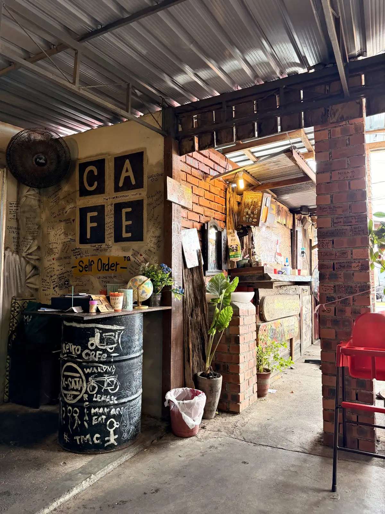
Kleidung
In Städten und am Strand ganz normal. In Moscheen und Tempeln sind Schultern und Knie bedeckt, Frauen tragen in Moscheen zusätzlich ein Kopftuch. Bei den grossen Moscheen werden Gewänder am Eingang ausgeliehen. An der Ostküste und auf dem Land kleidest du dich etwas zurückhaltender.
Schuhe aus
In Moscheen, Tempeln und vielen Häusern ziehst du die Schuhe aus. Stehen vor einer Tür Schuhe, ist das dein Zeichen.
Rechte Hand
Gib Geld und Essen mit der rechten Hand. Zeig nicht mit dem Zeigefinger auf Menschen, unter Malaien zeigt man mit dem Daumen.
Durian
Das Schild mit der durchgestrichenen Stachelfrucht wirst du oft sehen: Durian ist in vielen Hotels und in der Bahn verboten. Wer sie einmal gerochen hat, versteht warum. Probieren solltest du sie trotzdem, am besten an einem Stand auf der Strasse.
Alkohol
Die Mehrheit der Malaien trinkt keinen Alkohol. In chinesischen Restaurants, Bars und Supermärkten bekommst du ihn trotzdem, nur teuer. In konservativen Staaten wie Kelantan und Terengganu ist er schwer zu finden.
Feiertage: wann das ganze Land unterwegs ist
Weil drei Kulturen zusammenleben, feiert Malaysia muslimische, chinesische und indische Feste. An den grossen davon sind Busse, Züge und Flüge ausgebucht. Die Daten für 2027 sind teils noch provisorisch.
Chinesisches Neujahr
2027 fällt es auf den 6. und 7. Februar. Rote Laternen überall, Löwentänze und Feuerwerk, vor allem in Penang und Kuala Lumpur. Viele chinesische Läden und Garküchen schliessen für ein paar Tage.
Ramadan und Hari Raya
Im Fastenmonat gibt es am Abend die Ramadan-Basare mit Essen an jeder Ecke. Am Ende steht Hari Raya Aidilfitri, 2027 voraussichtlich am 10. und 11. März. Dann fahren alle zu ihren Familien, und Busse und Strassen sind tagelang voll.
Thaipusam und Deepavali
Zu Thaipusam, 2027 am 22. Januar, pilgern Hunderttausende Hindus zu den Batu Caves bei Kuala Lumpur. Deepavali, das Lichterfest, fällt 2027 voraussichtlich auf den 28. Oktober.
31. August und 16. September
Am Merdeka-Tag feiert Malaysia die Unabhängigkeit, am 16. September den Malaysia-Tag. An beiden Tagen hängen überall Fahnen.
Praktisches: Geld, Internet, Gesundheit und Sicherheit
Geld
Bezahlt wird in Ringgit, abgekürzt RM. Die Faustregel ist einfach: Teil durch fünf, dann hast du ungefähr den Preis in Franken.
Die Währung
Es gibt Noten von RM 1 bis RM 100 und Münzen für die Sen, die Rappen des Ringgit. Ein Teller Nudeln an der Garküche kostet oft unter RM 15, also weniger als 3 CHF.
Karte oder bar?
In Malls, Restaurants, Supermärkten und bei Grab zahlst du fast überall mit Karte. Für Märkte, Garküchen und kleine Läden brauchst du Bargeld. Geldautomaten gibt es in jeder Mall.
Lehn am Automaten und an der Kasse die Umrechnung in Franken ab und wähl Ringgit. Welche Karten sich für Schweizer ohne hohe Gebühren lohnen, steht bei Geld & Karten.
Touch ’n Go
Für Bahn und Bus in Kuala Lumpur lohnt sich die Touch-’n-Go-Karte, die du am Schalter oder im Supermarkt kaufst und auflädst. Ausländische Bankkarten funktionieren an den Schranken nicht zuverlässig.
Trinkgeld
Trinkgeld ist in Malaysia nicht üblich. In Restaurants mit dem Zeichen ++ auf der Karte kommen ein Service-Zuschlag von meist 10 Prozent und 6 Prozent Steuer noch dazu, dann musst du nichts mehr geben. Wer zufrieden war, rundet auf.
Handeln
Auf Märkten wie der Petaling Street in Kuala Lumpur gehört Handeln dazu, der erste Preis für T-Shirts und Taschen liegt gern beim Doppelten. In Malls, Restaurants und bei Grab wird nicht gehandelt.
Internet und Strom
Mobiles Internet ist in Malaysia günstig und in Städten schnell. Im Regenwald und auf kleinen Inseln wird es dünner.
SIM-Karte oder eSIM
Am einfachsten ist eine eSIM, die du zu Hause kaufst und bei der Landung aktivierst. Am Flughafen gibt es auch Touristen-SIM-Karten, dafür brauchst du den Pass. Für Grab und die Navigation ist mobiles Internet fast Pflicht. Mehr in unserem SIM-Karten-Guide.
Stecker Typ G
In Malaysia gibt es 240 Volt und Steckdosen nach britischem Typ G mit drei eckigen Stiften. Schweizer Stecker passen nirgends, ein Reiseadapter gehört ins Handgepäck. In vielen Hotels gibt es USB-Anschlüsse, darauf verlassen würden wir uns nicht.
Apps, die du brauchst
Grab für Fahrten und Essen, Google Maps zum Navigieren, die App der Bahn für Zugtickets und WhatsApp für Unterkünfte und Touren. Mehr dazu bei den wichtigen Apps.
Gesundheit und Sicherheit
Malaysia gilt als eines der sichersten Länder Südostasiens, und die medizinische Versorgung in den Städten ist gut. Ein paar Dinge solltest du trotzdem wissen, vor allem zu Mücken und zu den Gesetzen.
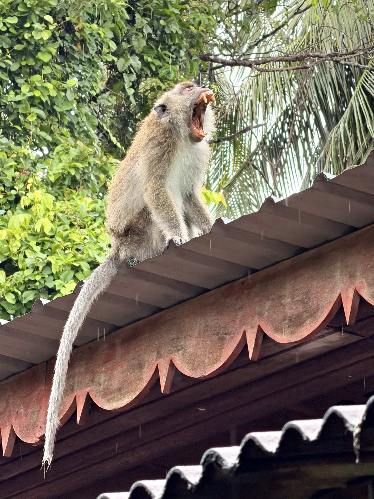
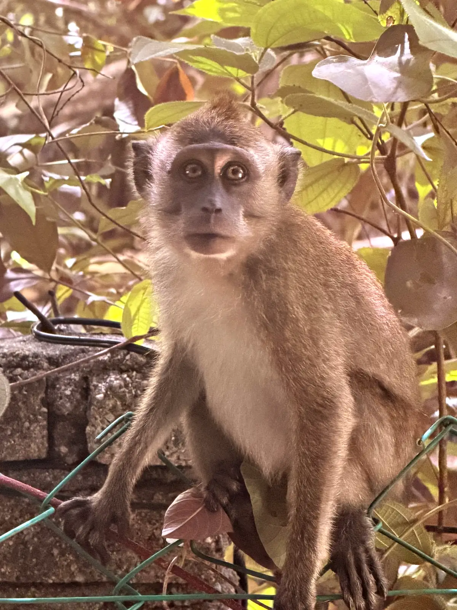


Impfungen
Vorgeschrieben ist keine Impfung. Kommst du innerhalb von sechs Tagen aus einem Gelbfiebergebiet, brauchst du aber einen Impfnachweis, sonst droht Quarantäne. Für alle Reisenden empfohlen sind die Grundimpfungen nach Schweizer Impfplan und Hepatitis A. Ob Typhus, Tollwut oder Japanische Enzephalitis dazukommen, hängt von Dauer und Reisestil ab. Lass dich 6 bis 8 Wochen vorher beraten, Infos gibt es auf healthytravel.ch und bei Gesundheit & Impfungen.
Dengue und Malaria
Dengue kommt im ganzen Land vor, die Mücken stechen auch tagsüber. Repellent mit DEET oder Icaridin und lange Kleider am Abend helfen.
Malaria: Laut healthytravel.ch ist das Risiko auf der Halbinsel tief, dort reicht Mückenschutz. In den Zentren von Kuala Lumpur und George Town gibt es kein Risiko. Auf Borneo ist es mittel, dann klärst du mit der Reisemedizin, ob du ein Notfallmedikament mitnimmst, geprüft am 12.10.2026.
Tollwut und Affen
In Sarawak gibt es seit einigen Jahren immer wieder Tollwutfälle, allein im März 2025 wurden elf gemeldet. Die Tollwutimpfung vor der Reise empfiehlt healthytravel.ch vor allem für Reisen in abgelegene Gegenden, für Velofahrer und für Höhlenbesuche. Streichel keine fremden Hunde und Katzen und füttere keine Affen. Auf dem Penang Hill und auf Langkawi sind sie erstaunlich frech. Nach einem Biss oder Kratzer die Wunde 10 bis 15 Minuten mit Wasser und Seife waschen und sofort ins Spital.
Wasser und Essen
Leitungswasser trinkst du besser nicht. Wasser in Flaschen gibt es überall günstig, viele Apartments haben einen Filter. Streetfood ist in Malaysia meist frisch und sicher, nimm Stände, an denen viel los ist.
Spitäler und Versicherung
In Kuala Lumpur und Penang gibt es sehr gute Privatspitäler, sie verlangen aber vor der Behandlung oft eine Kostengutsprache oder eine Anzahlung. Darum ist eine Auslandskrankenversicherung mit Rücktransport Pflicht.
Gesetze, die du kennen musst
Auf Drogenhandel steht in Malaysia weiterhin die Todesstrafe. Seit 2023 ist sie nicht mehr zwingend, aber sie wird verhängt, auch gegen Ausländerinnen und Ausländer.
Homosexuelle Handlungen sind in Malaysia strafbar, für Musliminnen und Muslime gilt zusätzlich die Scharia. Verfolgt werden Touristen selten, Zurückhaltung in der Öffentlichkeit ist trotzdem ratsam. Kritik am Königshaus und an der Religion kann ebenfalls strafbar sein.
Sicherheit
Gewalt gegen Touristen ist selten. Wir haben uns auch spät abends in Kuala Lumpur sicher gefühlt. Häufiger sind Taschendiebe und Diebe auf Rollern, die Taschen im Vorbeifahren schnappen. Trag sie auf der Seite weg von der Strasse.
Das EDA rät von Reisen an die Nord- und Ostküste von Sabah samt vorgelagerten Inseln ab, mehr dazu oben bei Sabah. Auch von Reisen in die Grenzregion zu Thailand rät es ab. Aktuelle Hinweise stehen in den Reisehinweisen des EDA, geprüft am 12.10.2026.
Im Notfall
Notruf 999 für Polizei, Ambulanz und Feuerwehr, vom Handy auch 112. Die Schweizer Botschaft in Kuala Lumpur erreichst du unter +60 3 2148 0622, für konsularische Dienste ist das Regionale Konsularcenter in Bangkok zuständig. Alles Weitere bei den Schweizer Vertretungen in Malaysia. Die Helpline des EDA hilft rund um die Uhr: +41 800 24-7-365 oder +41 58 465 33 33.
Häufige Fragen zu Malaysia
Wie lange sollte ich einplanen?
Für die klassische Route Kuala Lumpur, Cameron Highlands, Penang und Langkawi sind drei Wochen gut, wenn du nicht hetzen willst. Wir hatten fünf Wochen und haben uns überall Zeit gelassen, vor allem auf Langkawi. Für Borneo rechnest du mindestens eine Woche dazu.
Lohnt sich Borneo?
Für Natur und Tiere ja. Orang-Utans, Nasenaffen und der Kinabalu gibt es so nur dort. Wir haben Borneo auf dieser Reise ausgelassen, weil die Zeit nicht gereicht hat. Plan es als eigenen Teil der Reise mit Inlandflug, und beachte, dass das EDA von der Nord- und Ostküste von Sabah abrät.
Kann ich Malaysia mit Singapur oder Thailand verbinden?
Ja, sehr einfach. Nach Singapur fährst du ab Kuala Lumpur mit Bus oder Flugzeug. Nach Thailand fliegst du ab Penang oder Langkawi oder nimmst die Fähre ab Langkawi. Mehr steht im Thailand-Guide. Über Land durch die Grenzregion zum Süden Thailands rät das EDA ab. Mehr in unserem Guide zu Singapur.
Ist Malaysia sicher?
Malaysia gilt als eines der sichersten Länder Südostasiens, und so haben wir es auch erlebt. Pass in Städten auf Handy und Tasche auf, und halt Abstand zu Affen. Aktuelle Hinweise stehen in den Reisehinweisen des EDA.
Ist Malaysia gut mit Kindern?
Sehr. Die Malls sind klimatisiert und kinderfreundlich, der KLCC Park hat einen grossen Wasserspielplatz, und die Wege zwischen den Stationen der Westküste sind kurz. Anstrengend sind nur Hitze und Fusswege ohne Gehsteig.
Ist Malaysia gut für Frauen, die allein reisen?
In den Städten und an der Westküste reisen viele Frauen allein. An der Ostküste und auf dem Land hilft zurückhaltende Kleidung, und abends nimmst du besser Grab statt allein zu Fuss zu gehen.
Gibt es Alkohol?
Ja, in Bars, Restaurants und Supermärkten, aber hoch besteuert. Ein Bier in der Bar kostet fast so viel wie in der Schweiz. Ausnahme: Auf Langkawi ist es zollfrei und deutlich günstiger.
Aus der Schweiz: was du wissen solltest
Reisehinweise des EDA
Lies vor der Abreise die aktuellen Reisehinweise des EDA für Malaysia. Und erfass deine Reise in der App Travel Admin, dann weiss die Schweiz im Notfall, dass du dort bist.
Botschaft
Die Schweizer Botschaft liegt an der 16 Persiaran Madge in Kuala Lumpur, Telefon +60 3 2148 0622. Pässe und andere konsularische Dienste laufen über das Regionale Konsularcenter in Bangkok. Mehr bei den Schweizer Vertretungen in Malaysia.
Die Krankenkasse reicht nicht
Die Grundversicherung zahlt Notfälle im Ausland höchstens bis zum doppelten Betrag, den die Behandlung in der Schweiz kosten würde. Einen Rücktransport zahlt sie nicht. Was du stattdessen brauchst, steht bei der Auslandskrankenversicherung.
Führerausweis
Für einen Mietwagen brauchst du den internationalen Führerausweis vom Strassenverkehrsamt deines Kantons, immer zusammen mit dem Schweizer Ausweis. Ohne ihn braucht es eine beglaubigte Übersetzung des Schweizer Ausweises.
Packliste
Was wir für die Weltreise eingepackt haben, steht in unserer Packliste, auch als PDF.
Für wen sich Malaysia lohnt
Malaysia ist eines der einfachsten Länder Südostasiens zum Reisen. Es ist günstig, Bus und Zug fahren zuverlässig, und gegessen wird überall gut.


Lohnt sich für
Alle, die Südostasien zum ersten Mal bereisen, Städte und Streetfood mögen, Berge und Inseln verbinden wollen und mit Bus und Zug unterwegs sind.
Weniger passend für
Alle, die vor allem Strand wollen: Auf der Route über Kuala Lumpur, die Cameron Highlands und George Town gibt es bis Langkawi keinen. Auch mit wenig Zeit oder kleinem Budget ist Borneo nicht ideal, die Inlandflüge kosten extra.
Unser Rat
Plan drei Wochen für die Westküste ein, fang in Kuala Lumpur an und hör auf Langkawi auf. Borneo ist eine eigene Reise.
Bildnachweise
Die Fotos zu Langkawi, Penang, Ipoh, den Cameron Highlands, Kuala Lumpur und dem Rest dieser Seite haben wir selbst aufgenommen. Nur die Fotos zu Malakka, Taman Negara, den Perhentian-Inseln, Sarawak und Sabah stammen von Wikimedia Commons und stehen unter freien Lizenzen. Sie wurden verkleinert und zugeschnitten.
Malakka: Marcin Konsek, CC BY-SA 4.0, Wikimedia Commons: Quelle; Annette Teng, CC BY 3.0, Wikimedia Commons: Quelle; CEphoto, Uwe Aranas, CC BY-SA 3.0, Wikimedia Commons: Quelle; Sharon Hahn Darlin, CC BY 2.0, Wikimedia Commons: Quelle
Taman Negara: Vyacheslav Argenberg, CC BY 4.0, Wikimedia Commons: Quelle; Vyacheslav Argenberg, CC BY 4.0, Wikimedia Commons: Quelle; Vyacheslav Argenberg, CC BY 4.0, Wikimedia Commons: Quelle; Josefito123, CC BY-SA 4.0, Wikimedia Commons: Quelle
Perhentian-Inseln: Vyacheslav Argenberg, CC BY 4.0, Wikimedia Commons: Quelle; Vyacheslav Argenberg, CC BY 4.0, Wikimedia Commons: Quelle; Vyacheslav Argenberg, CC BY 4.0, Wikimedia Commons: Quelle; Vyacheslav Argenberg, CC BY 4.0, Wikimedia Commons: Quelle
Sarawak: Nur Nafis Naim, CC BY-SA 4.0, Wikimedia Commons: Quelle; Borneo mobilegrapher, CC BY-SA 4.0, Wikimedia Commons: Quelle; Borneo mobilegrapher, CC BY-SA 4.0, Wikimedia Commons: Quelle; Marufish, CC BY-SA 2.0, Wikimedia Commons: Quelle
Sabah: kallerna, CC BY-SA 4.0, Wikimedia Commons: Quelle; kallerna, CC BY-SA 4.0, Wikimedia Commons: Quelle; CEphoto, Uwe Aranas, CC BY-SA 3.0, Wikimedia Commons: Quelle; Johnny Chen, CC0, Wikimedia Commons: Quelle
Weiter planen

Weltreise planen
Der Überblick: alle Schritte von der Idee bis zum Abflug.Zum Thema →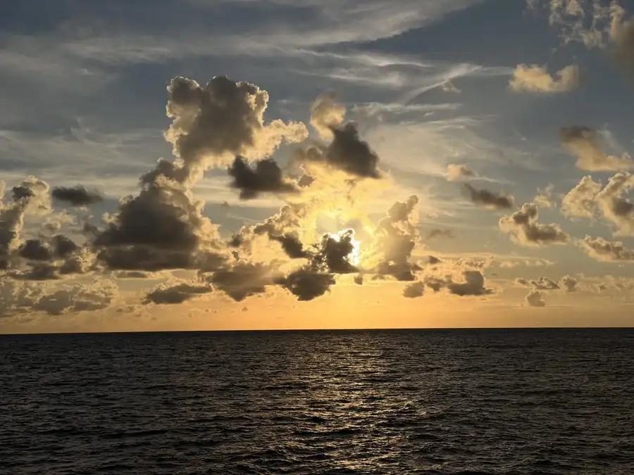
Idee & Zeitplan
Wann du losgehst und was du vorher klärst.Zum Thema →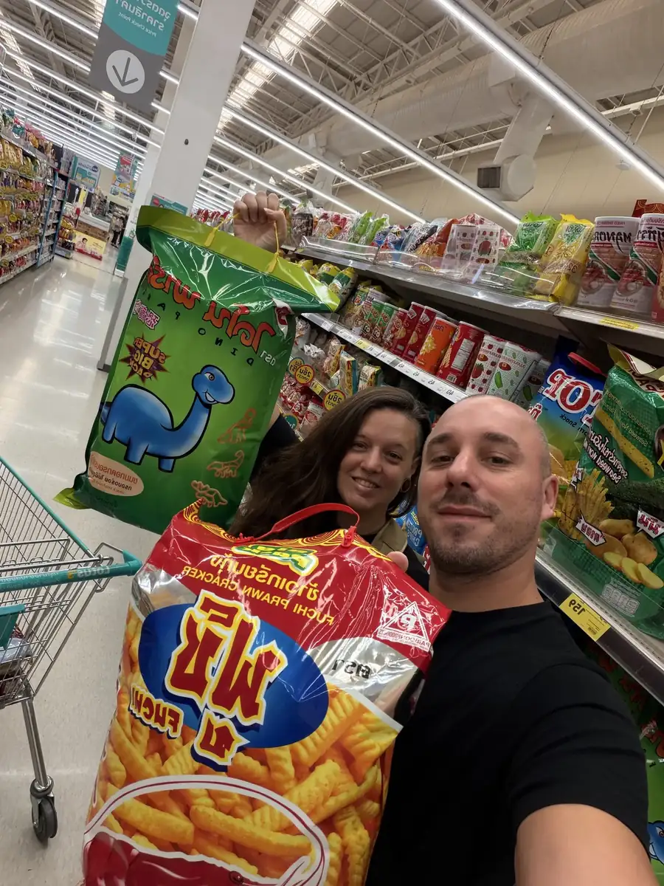
Budget & Kosten
Was die Reise kostet, in Franken gerechnet.Zum Thema →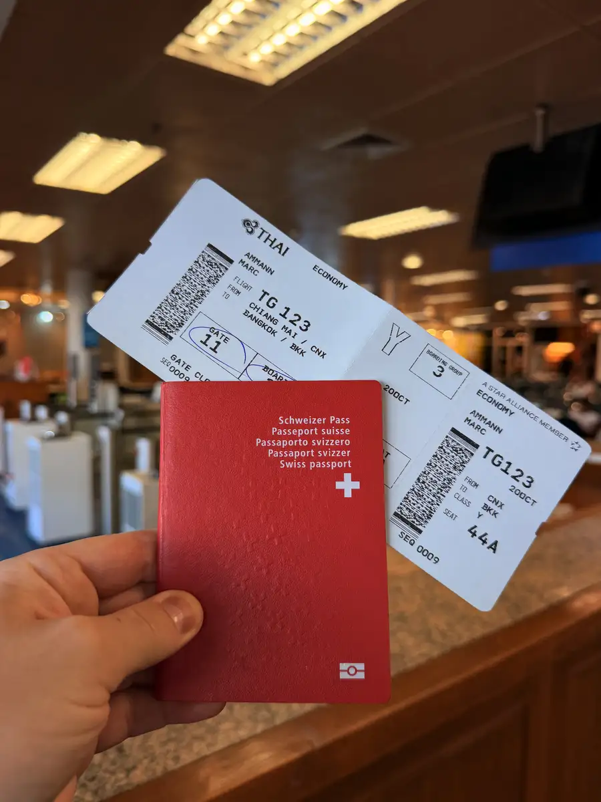
Dokumente
Pass, Visum, Einreise und Kopien für deine Weltreise.Zum Thema →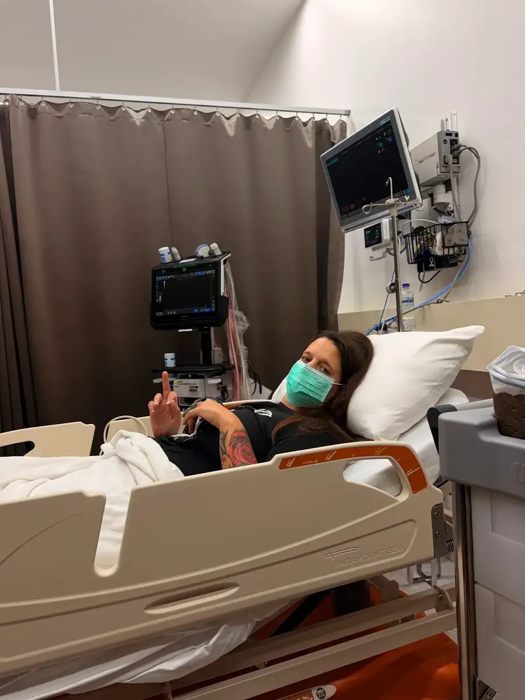
Auslandskrankenversicherung
Welche Deckung du für die Reise brauchst.Zum Thema →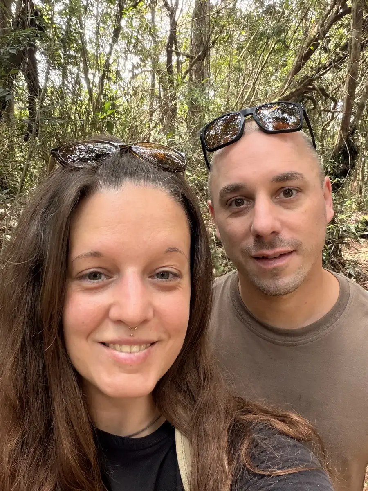